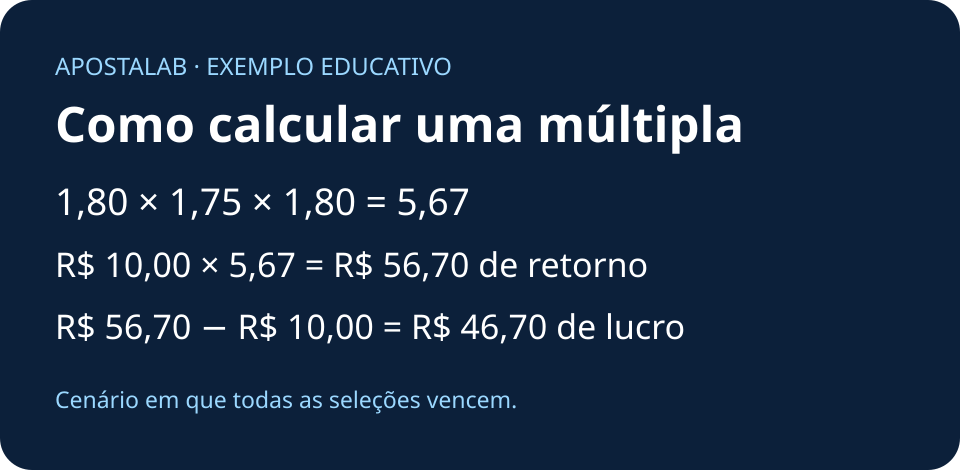

APOSTALAB
Como calcular odds combinadas
Multiplique as odds decimais das seleções para obter a odd combinada. Multiplique o resultado pelo valor apostado para calcular o retorno potencial. Depois, subtraia o valor apostado do retorno para chegar ao lucro líquido potencial.
Abrir a calculadora de apostas múltiplas

Baixar infográfico (SVG)
Três exemplos resolvidos
| Exemplo | Odds | Valor apostado | Odd combinada | Retorno potencial | Lucro potencial |
|---|
| 1 | 1,80 × 1,65 | R$ 20,00 | 2,97 | R$ 59,40 | R$ 39,40 |
| 2 | 1,80 × 1,75 × 1,80 | R$ 10,00 | 5,67 | R$ 56,70 | R$ 46,70 |
| 3 | 1,50 × 1,60 × 1,75 × 2,00 | R$ 25,00 | 8,40 | R$ 210,00 | R$ 185,00 |
Baixar os três exemplos em CSV
Nos três exemplos, todas as seleções vencem. Em uma múltipla tradicional, uma seleção perdedora faz o bilhete perder. Os exemplos usam partidas distintas, sem anulações, bônus ou taxas.